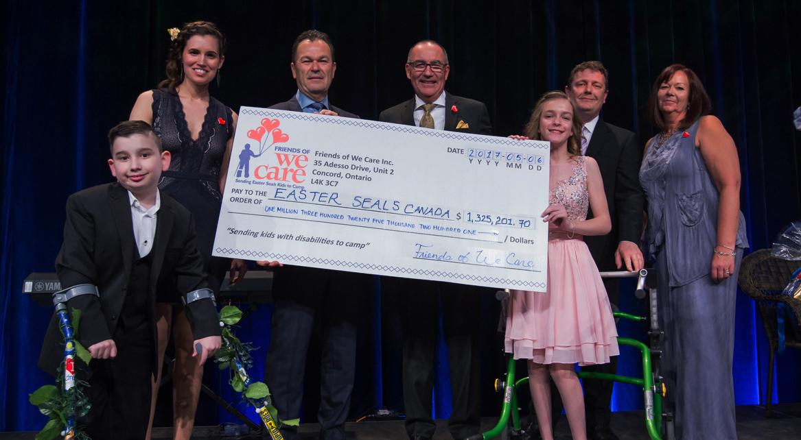

The heart and soul of our organization
Friends of We Care is made up of a network of companies representing all facets of the Food service and Hospitality Industry. There are currently 84 Member Sponsors from across Canada and the US representing manufacturers, distributors, operators, brokers, cold storage, management, marketing, and transport companies.
Our Member Sponsors make our success possible. Not only do they contribute financially to our cause, they also donate food and prizing to our events and human resources through volunteers. Friends of We Care is grateful for all of our Member Sponsors and their support. Through annual contributions and event support, we raise over $1,000,000 annually, providing complete funding for 500 kids to enjoy a special camp experience, tailored to fit their needs (that’s 5,000 camp days every summer).
Our organization continues to grow and welcomes new companies within the industry, or companies, associations, and individuals interested in being part of it. Your involvement with Friends of We Care will help us send more kids to camp, and provide you with great networking and collaboration opportunities, which we hope will also help you grow your business.
Check out our amazing Member Sponsors below.
- Affinity Group - JL International
- Bunge Canada
- BUNN Canada
- Canada Dry Mott's Inc.
- Club Coffee LP
- Chase Global Foods
- Dare Foods Ltd.
- Freeman Signature Inc.
- Gordon Food Service
- Kellogg Canada - Out of Home Division
- LCBO
- McCain Foods (Canada)
- Piller`s Fine Foods - a division of PBOLP
- Starbucks Coffee Company
- Unilever Foodsolutions
- Steve Harding
- Stone Straw Limited
- TTS Marketing and Sales
- Ventura Foods Canada
- Weston Bakeries Foodservice